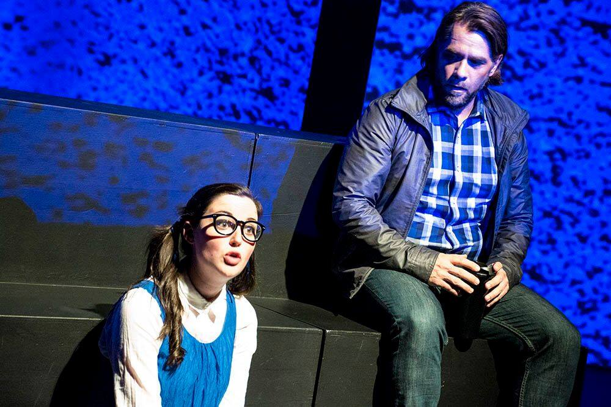

About Me
Biography
My undergraduate degree was in physics at the University of Nottingham, from which I graduated in 2003. During this time, I spent a year on exchange at the University of Toronto.
For my PhD I stayed in Nottingham, although I switched disciplines and studied experimental psychology. Specifically, I worked on the statistical processing of visuomotor distributions and brain imaging of the learning of predictable and random force sequences. Along the way, I was involved in the development of a novel device for providing forces to the human finger inside the MRI scanner. I was supervised by Professor Stephen Jackson in the School of Psychology and Professor Peter Morris in the Sir Peter Mansfield Magnetic Resonance Centre.
In 2006 I started postdoctoral work with Professor Chris Miall at the University of Birmingham. I worked mainly on behavioural studies using the vBOT robotic manipulandum to investigate state-dependent reaching movements. I successfully defended my PhD in February 2008 and graduated in July 2008.
In October 2009 I moved to Kingston, Ontario, Canada to work with Professor Stephen Scott at Queen's University. My work here consists of further behavioural and clinical studies, including electromyography recordings, alongside building neuronal network models of human arm control. I was awarded a two-year NeuroDevNet postdoctoral fellowship to extend my clinical work to populations of children with fetal alcohol spectrum disorder.
Starting in November 2012, I took a change in career direction and left full-time research. I spent several months travelling the world, making money by freelancing, performing pre-submission editing of academic papers of scientists without English as their first language.
I moved to Toronto in September 2013, and I am currently freelancing in a variety of fields: editing, content writing, coding, tutoring, and music.
Research
During my nine years as a PhD student and postdoctoral fellow, I engaged in a wide variety of research into human motor control.
Behavioural
Much of my motor control research was on behavioural experiments in
humans. I was primarily interested in reaching movements; it is a
complex and difficult task to activate all the muscles in the human arm
in just the right order to attain a goal, and yet it is something that
we do so naturally that we do not even think about it. Goal-directed
reaches are a huge part of human interactions with the world, and how
we learn to both control our actions and predict their sensory
consequences is an interesting problem.
In this arena, I explored how we learn perturbations on one arm that
depend on the state of the other arm (Jackson & Miall, 2008) as well as
investigating a novel sensory illusion that arises following a
voluntary arm movement (Jackson & Miall, 2010). I also studied the
impact of proprioception on visual attention (Jackson, Miall and
Balslev, 2010) and was involved with the development of a novel device
to provide force feedback during fMRI experiments (Jackson et al.,
2008).
Computational
I also explored some computational models of motor control (e.g.,
Haith et al., 2008). The primary issues involved in creating a
computational model centre around explanatory power and physiological
realism. Just as it would be pointless to laboriously build a
physiologically realistic model that did not work, so too nobody wants
a model that can explain everything but that cannot possibly be
implemented in the brain.
Neuronal network models allow the amount of realism and explanatory
power to be carefully tuned depending on the nature of the problem. The
great advantages of using networks are that they are intrinsically good
at generalising what they have learned in one configuration to other
configurations. It’s been exciting to see the progress of machine
learning using deep neural networks over the last few years.
Clinical
The use of robotic technology in rehabilitation following stroke is well-established. However, the use of robotic technology for the assessment of impairments following stroke is still in its infancy. In t his domain, I developed an intuitive bimanual robotic task with the aim of finding parameters that can be used to give an objective assessment of impairments in coordination (Lowrey et al., 2014). This task is now being used to identify similar impairments in children with fetal alcohol spectrum disorder (Williams et al., 2014).
Publications
Lowrey CR, Jackson CPT, Bagg SD, Dukelow SP, Scott SH (2014). A novel robotic task for
assessing impairments in bimanual coordination post-stroke. Int J
Phys Med Rehabil S3: 002. [free
online]
Williams L, Jackson CPT, Choe N, Pelland L,
Scott SH, Reynolds JN (2014). Sensory-motor deficits in children with
fetal alcohol spectrum disorder assessed using a robotic virtual
reality platform. Alcohol Clin Exp Res 38: 116-125. [online]
Jackson CPT, Miall RC & Balslev D (2010). Spatially valid proprioceptive
cues improve the detection of a visual stimulus. Exp Brain Res 205:
31-40. [free
online]
Jackson CPT & Miall, RC (2010). Illusory
force perception following a voluntary limb movement. NeuroReport 21:
675-679. [online]
Haith A,
Jackson CPT, Miall RC & Vijayakumar S (2008). Unifying the
sensory and motor components of sensorimotor adaptation. NIPS
593-600. [free
online]
Mueller SC, Jackson CPT & Skelton RW
(2008). Sex differences in a virtual water maze: an eye tracking and
pupillometry study. Behav Brain Res 193: 209-215. [online]
Jackson CPT, Bowtell R, Morris PG & Jackson SR (2008). A novel
MR-compatible device for providing forces to the human finger during
functional neuroimaging studies. NeuroImage 40: 1731-1737.
[online]
Jackson CPT & Miall RC (2008). Contralateral manual compensation for
velocity-dependent force perturbations. Exp Brain Res 184: 261-267.
[online]
Jackson CPT, Albert NB, Roberts RD, Galea JM & Swait G (2007). Target
selection: choice or response? J Neurosci 27: 6079-6080. [free
online]
Coding Projects
I have a lot of experience with many programming languages, but I’m probably best at MATLAB, Python, Java, and C++, roughly in that order. I’ve been doing a few bespoke freelance projects, but I’m always interested in more.
MATLAB Data Analysis
My bread and butter, for a good decade when I was working in academia. I can write, refactor, optimise, and troubleshoot MATLAB code. Mostly the applications for this work are in the academic or scientific industry fields, so drop me a line if you’re interested in my help.
R to Python
Recently I undertook a project in which I converted a whole bunch of code from R to Python, which was challenging and fun. I’ve been learning more about dataframes and the new tools of data science recently, and I’m comfortable with slicing, dicing, and analysis in both languages.
Code Mentoring
Need help with your code? Check out my profile on codementor.io and get in touch that way if you’d like – or just send me an email.
Creative Projects
Music
I have a number of musical projects that I am associated with. I play piano, sing and write in a variety of formats.
Julia Tynes
Julia Tynes is an award-winning Toronto-based Pop/R&B singer and songwriter. We have been co-writing for several years and have performed in venues across Toronto and Canada, including the Opera House, the Taste of the Danforth festival, and Stan Rogers Fest in Cape Breton. Julia’s newest single will be released January 2018; keep an eye on her site for further details. Or have a listen to her debut single After You, which I co-wrote.
That Choir
Conducted by Craig Pike, and about to enter its tenth season, That Choir is a Toronto-based a capella choir that performs classical contemporary choral music. We have performed in various locations in the greater Toronto area, and, aside from our major concerts, we perform cabarets, flash mobs, and most recently were the featured choir in the Game of Thrones Live experience, as well as the Hans Zimmer concert in the Air Canada Centre. I sing bass.
Solo piano
I am an accomplished pianist and alongside playing with Julia I also perform elsewhere. For example, I was a special skills extra and played on the third season of the cult TV show Hannibal, as well as on some less conventional projects – for example, I performed on an organ with the keys made entirely made of cucumbers for a Hendricks Gin marketing campaign.
Theatre
Theatre is also something I have been passionate about for many years. I have acted and directed in several productions recently.
Proof
In March 2017, Theatre UnBlocked presented an independent production of Proof, a full-length play by David Auburn. The play won a Pulitzer prize and a Tony award, and centres around a young woman who is forced to look after her brilliant mathematician father after he becomes mentally ill. The production, which I directed, received rave reviews.
Theatre InspiraTO
The InspiraTO Festival is a ten-minute play festival now in its twelfth year. In 2016 I attended their directing academy, and directed a play (Paul and Petandra) that won the People's Choice Award for its category. I also acted in the play Backstory. In June 2017, I directed the play Immortals for the festival, as well as acting in Santa Doesn't Live Here Any More.
The Last Five Years
I music directed and played the piano for Theatre HN's production of The Last Five Years in September 2017. Learning the score, written by Jason Robert Brown, was a huge personal challenge for me, and I spent three months focusing on little else. Highlights for me included leading the six-piece band and getting the music stuck in my head for weeks.